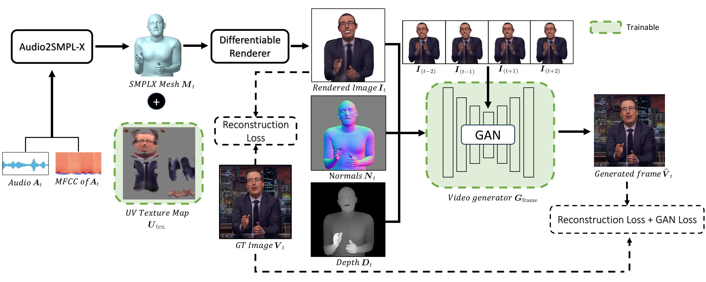

Co-speech gesture video generation is an enabling technique for many digital human applications. Substantial progress has been made in creating high-quality talking head videos. However, existing hand gesture video generation methods are primarily limited by the widely adopted 2D skeleton-based gesture representation and still struggle to generate realistic hands. We introduce an co-speech video generation pipeline to synthesize human speech videos leveraging human mesh-based representations. By adopting a 3D human mesh-based gesture representation, we present a mesh-grounded video generator that includes a mesh texture map optimization step followed by a conditional GAN network and outputs photorealistic gesture videos with realistic hands. Our experiments on the TalkSHOW dataset demonstrate the effectiveness of our method over 2D skeleton-based baselines.
Given an input audio \( \boldsymbol{A_{t}} \), we first train a network to predict the plausible human motion of face, hands, and body, as denoted as SMPL-X mesh \( \boldsymbol{M_t} \) for each frame. Here \( \boldsymbol{t} \) is the frame index. Subsequently, we optimize the UV texture map \( \boldsymbol{U_{tex}} \) for each character using differentiable rendering so that we can reconstruct all video frames given the texture map. Finally, we design a conditional GAN-based video generator \( \boldsymbol{G_{frame}} \) to synthesize the final video given the current 2D rendered image \( \boldsymbol{I_{t}} \), the normal map \( \boldsymbol{N_t} \), the depth map \( \boldsymbol{D_t} \), as well as 2D rendered images from nearby frames. The video generator is trained with a combination of reconstruction loss and GAN loss.

We introduce a method to generate co-speech gesture video of an actor from audio input - an
especially challenging task to generate realistic hands when only a relatively small video of the actor is
present during training.
Please play the audio in each of the video
to listen to the input speech.
For viewing the results for all the speakers please refer to our Gallery
--- Our Results (Audio to Video) page.
Note: The background of each actor in the training sequnece is not constant (moves because
camera is not still across entire training video). This leads to sight change in background in the generated
results.
Input Mesh
Textured Mesh
Generated Video
We show results of generated texture map and generated video by our mehotd from a given untextured mesh sequence.
We also provide the corresponding ground-truth video for comparison.
For viewing the results for all the speakers please refer to our Gallery
--- Our Results (Mesh to Video) page.
Note: The background of each actor in the training sequnece is not constant (moves because
camera is not still across entire training video). This leads to sight change in background in the generated
results.
Input Mesh
Textured Mesh
Generated Video
Ground Truth Video
We compare video generated by our method, that uses intermediate rendering of 3D meshes as conditioning to baseline
method that uses 2D keypoints as intermediate representation. The 2D keypoints are extrated from Mediapipe from
ground-truth video. We also provide the corresponding ground-truth video for comparison.
For viewing the results for all the speakers please refer to our Gallery
--- Baseline Comparison (Mesh to Video) page.
Note: The background of each actor in the training sequnece is not constant (moves because
camera is not still across entire training video). This leads to sight change in background in the generated
results.
Keypoint Maps
(Mediapipe)
2D Baseline
Input Mesh
Ours
Ground Truth Video
Given a sequence of input untextured meshes, we study the role of (1) depth and normal maps and (2)
textured meshes for generating videos. We compare our full method that uses depth, normal maps and
textured rendering of the meshes as input to generate video, to (1) Ours (w/o depth and normal maps)
which does not use additonal depth and normal map conditioning as input, and (2) Ours (w/o textured mesh),
which only uses rendering of untextured meshes as input . We also provide the corresponding ground-truth
video for comparison.
For viewing the results for all the speakers please refer to our Gallery
--- Ablation Study (Mesh to Video) page.
Note: The background of each actor in the training sequnece is not constant (moves because
camera is not still across entire training video). This leads to sight change in background in the generated
results.
Input Mesh
Ours
(w/o
Depth + Normal)
Ours
(w/o
Textured Mesh)
Ours
Ground Truth Video
Given an audio input, we study the role of (1) depth and normal maps and (2) textured meshes for generating videos.
We compare our full method that uses depth, normal maps and textured rendering of the meshes as input to generate video,
to (1) Ours (w/o depth and normal maps) which does not use additonal depth and normal map conditioning as input, and
(2) Ours (w/o textured mesh), which only uses rendering of untextured meshes as input . Please play the audio in each
of the video to listen to the input speech.
For viewing the results for all the speakers please refer to our Gallery
--- Ablation Study (Audio to Video) page.
Note: The background of each actor in the training sequnece is not constant (moves because
camera is not still across entire training video). This leads to sight change in background in the generated
results.
Input Mesh
Ours
(w/o
Depth + Normal)
Ours
(w/o
Textured Mesh)
Ours
We thank Kangle Deng, Yufei Ye, and Shubham Tulsiani for their helpful discussion. The project is partly supported by Ping An Research.
The website template is taken from Custom
Diffusion (which was built on
DreamFusion's project page).